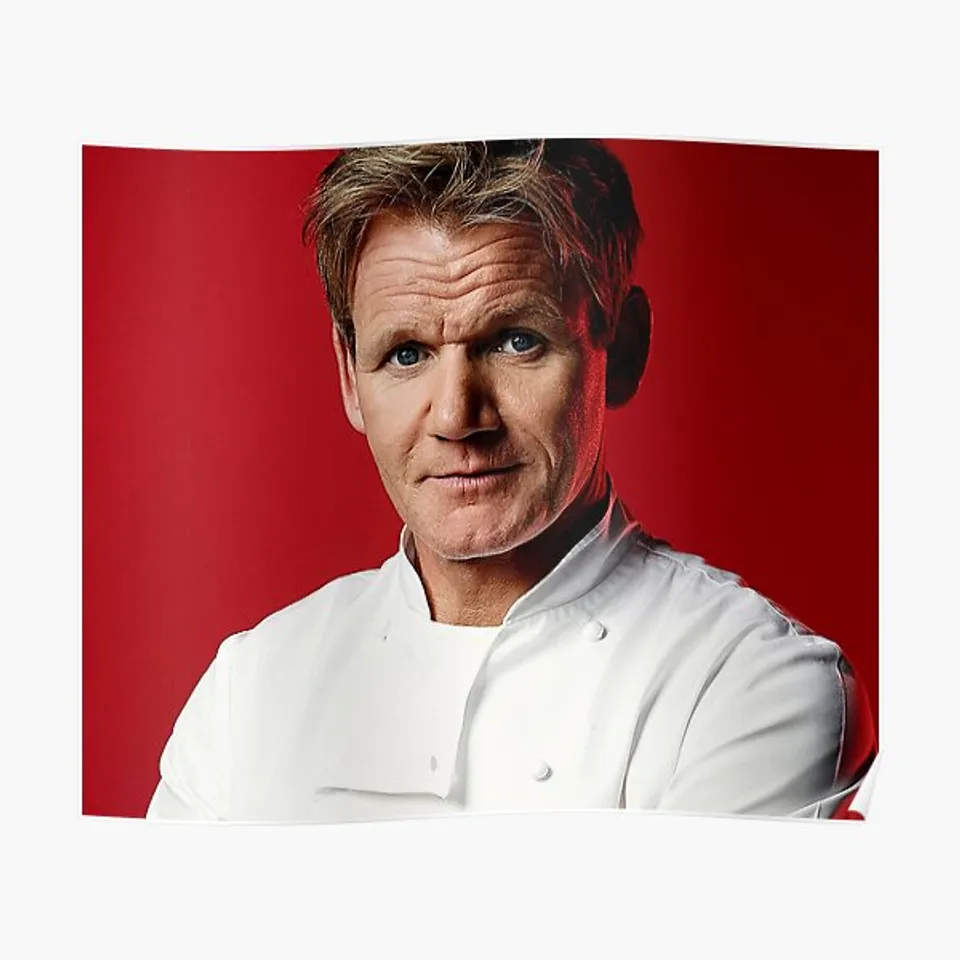

1. Gordon Ramsey
Gordon Ramsey is the best chef in the world because he has a beautiful accent. He also knows how to taste things really well. He is smart and a great cook.

Image from: Printerval by an unknown author.
2. Joël Robuchon
I really like Joël Robuchon because he looks like a really sweet guy and he most definitely looks like he knows how to make great food. He is known for his LEGENDARY dish "Mashed Potatoes (Pommes Purée). As well as egg and shrimp. I would love to eat his food.

Image from: Wikimedia Commons by an unknown author.
3. Alain Ducasse
I like Alain Ducasse because he looks like a really SWEET dude. He looks like he knows how to cook. He also has 34 restauraunts across the entire world.
Image from: Flickr by an unknown author.